| Livestock |
CO2eq (Gg)
|
Change (%) | |
|---|---|---|---|
| 2000 | 2021 | ||
| 3.A.1.a.ii - Other Cattle | 69,654.8 | 129,471.0 | 85.9 |
| 3.A.1.d - Goats | 6,591.2 | 11,940.8 | 81.2 |
| 3.A.1.a.i - Dairy Cows | 3,196.7 | 5,941.8 | 85.9 |
| 3.A.1.c - Sheep | 1,941.1 | 3,400.3 | 75.2 |
| 3.A.1.i - Poultry | 10.4 | 17.7 | 70.3 |
| 3.A.1.h - Swine | 12.5 | 14.7 | 17.6 |
| TOTAL | 81,406.7 | 150,786.3 | 85.2 |
5 AFOLU
5.1 Sector Overview
5.1.1 AFOLU sector description
5.1.2 Overview of methodology and completeness for the AFOLU Sector
5.2 Emissions and removals from Livestock category (3A)
5.2.1 Enteric Fermentation (3A1)
Methane (CH4) is a key greenhouse gas produced as a result of digestion in ruminant animals like cattle, as well as in some non-ruminants, such as pigs and camels. Ruminants account for the majority of CH4 emissions due to their capacity to decompose fibrous feed via anaerobic fermentation (Scoones 2023). The amount of CH4 emitted is affected by various factors including species, age, weight, feed quality and amount, as well as the energy expenditure of the animal (Moumen et al. 2016).
In 2021, methane emissions (represented as CO2eq) from enteric fermentation was 150,786.3 CO2eq (Gg) an increase of about 85.2% compared to 81,406.66 CO2eq (Gg) in 2000 (Table 5.1) with other cattle contributing 85.9 percent () of the 150,786.3 CO2eq (Gg) in 2021 (Figure 5.1).
5.2.2 Manure Management (3A2)
Livestock manure is primarily composed of organic matter. Under anaerobic conditions (i.e., in the absence of oxygen), the decomposition of manure by methanogenic bacteria results in the production of methane (CH4) (Figure 5.2). Such conditions are prevalent in intensive livestock management systems, such as dairy farms, beef feedlots, and swine and poultry operations, where manure is often stored in large piles or disposed of in lagoons. Manure management also contribute to nitrous oxide (N~2`O) emissions (Figure 5.2) during the handling and storage phases prior to soil application. Direct N2O emissions arise from the nitrification and denitrification processes of ammoniacal nitrogen present in the waste.
| Livestock |
CO2eq (Gg)
|
Change (%) | |
|---|---|---|---|
| 2000 | 2021 | ||
| 3.A.2.a - Cattle | 2,713.2 | 5,043.2 | 85.9 |
| 3.A.2.a.ii - Other cattle | 2,563.6 | 4,765.1 | 85.9 |
| 3.A.2.d - Goats | 593.0 | 1,074.3 | 81.2 |
| 3.A.2.a.i - Dairy cows | 149.6 | 278.2 | 85.9 |
| 3.A.2.c - Sheep | 148.8 | 260.6 | 75.2 |
| 3.A.2.i - Poultry | 62.6 | 78.6 | 25.5 |
| 3.A.2.h - Swine | 65.8 | 77.4 | 17.6 |
| TOTAL | 6,296.7 | 11,577.3 | 83.9 |
In 2021, CO2eq emission from manure management was 11,577.3 CO2eq (Gg) an increase of about 83.9% compared to 6,296.7 CO2eq (Gg) in 2000 (Table 5.2) with cattle contributing 85.1 percent () of the 11,577.3 CO2eq (Gg) in 2021 (Figure 5.3).
5.3 Emissions and removals from Land category (3B)
This section presents anthropogenic emissions and removals of CO~2 ~from the loss and gain of carbon (C), associated with land use and with land-use and land-cover change. Emissions and removals of CO2 from Harvested Wood Products (HWP), i.e., products that are manufactured/processed after the harvesting of wood from planted forests, such as paper, sawnwood and wood panels, are also taken into account.
5.3.1 Category overview
The Land category encompasses emissions and removals of greenhouse gases from land use and land-use change. This category is crucial for understanding the impact of land management practices on the carbon cycle and overall GHG emissions. Summary information on method and emission factor selection is provided in Table xx, with key categories identified.
Land use and land cover
|
Description |
|---|---|
| Category | |
| A. Forest Land | Forest land that remains forest land over time. |
| A. Forest Land | Land converted from other categories to forest land. |
| B. Cropland | Cropland that remains cropland over time. |
| B. Cropland | Land converted from other categories to cropland. |
| B. Cropland | Forest land converted to cropland. |
| B. Cropland | Wetlands converted to cropland. |
| C. Grassland | Grassland that remains grassland over time. |
| C. Grassland | Land converted from other categories to grassland. |
| C. Grassland | Forest land converted to grassland. |
| C. Grassland | Wetlands converted to grassland. |
| D. Wetlands | Wetlands that remain wetlands over time. |
| D. Wetlands | Land converted from other categories to wetlands. |
| E. Settlements | Settlements that remain settlements over time. |
| E. Settlements | Land converted from other categories to settlements. |
| E. Settlements | Forest land converted to settlements. |
| F. Other Lands | Land that does not fall into the other categories. |
5.3.2 Information on approaches used for representing land areas and on land-use databases used for the inventory preparation
This inventory employed Approach 2 for land-use identification, as outlined in Climate Change (IPCC) (2006). This approach facilitated the assessment of total land-use area extents and tracked transitions between land-use categories over time. Specifically, it enabled the quantification of conversions between different land-use types within the study period. The primary monitoring system used was remote sensing, which was instrumental in identifying forest land and detecting changes in forest cover.
To construct land-use transition matrices, data were sourced from national land use cover maps and the European Space Agency (ESA) Climate Change Initiative (CCI) Land Cover Maps for the years 1995, 2015, 2016, and 2021. A comparative classification analysis was conducted based on IPCC Guidelines (IPCC 2006) to ensure consistency between different data sources used for Activity Data. It is noteworthy that land-use classifications derived from ESA Land Cover Maps were reclassified to align with the national land-use mapping categories in accordance with the IPCC reporting framework.
5.3.3 Land-use definitions and the classification systems used and their correspondence to the Land categories
To ensure consistency across all land-based estimates, standardized working definitions for land categories were developed and adopted during the preparation of the estimates. These land-use categories align with the guidelines outlined in IPCC (Climate Change (IPCC) 2006). The following definitions are used for the different land-use categories, consistent with national land-use classifications:
Forest Land – is defined in accordance with the domestic definition as land that (i) is under forestry land-use and (ii) covers an area of at least 0.5 hectares, with a minimum tree crown cover of 10% or the potential to achieve such cover through natural or planted tree species. Additionally, the trees must have the potential to reach or have already attained a minimum height of 3 meters at maturity in situ. This category includes forest plantations and mangroves.
Cropland – refers to areas actively cultivated for the production of harvested crops. This includes tilled land, recently harvested fields, fallow land within crop rotation systems, and areas prepared for planting. In Tanzania, cropland encompasses both annual cropland, used for food crops such as maize, rice, cassava, sorghum, and beans, and perennial cropland, used for crops like coffee, cashew, tea, and sisal. Cultivation practices vary depending on regional climate and soil conditions.
Grassland – is defined as land where the vegetation is predominantly composed of grasses, with minimal tree cover. These areas are often characterized by open plains and serve as habitats for grazing animals. Grassland includes areas with tree cover below the thresholds specified for forest land (which may also be used for grazing) and set-aside grasslands (i.e., unmanaged grasslands not utilized for agricultural purposes).
Wetland – are areas of land that are saturated with water, either naturally or artificially. They can be temporary or permanent and include marshes, swamps, and peatlands. In Tanzania, wetlands are categorized into three main types:
- Coastal wetlands – formed by tidal influence and wave action, these include mudflats, mangroves, estuaries, and deltas;
- Rift system wetlands –found in rift depressions, these include salt lakes, swamps, and playas; and
- Highland drainage basin wetlands – formed by rivers originating in the highlands, these include lakes, swamps, and floodplains.
Settlements – refer to areas of human habitation, such as villages, towns, and cities, governed by the National Human Settlements Development Policy. This category encompasses all structured communities where people reside, categorized by population density and type of activity (urban, rural, or pastoral). Settlements are further classified based on population size, with “villages” having smaller populations compared to “minor towns” and “urban settlements.”
Other Land – includes areas not covered by the above classifications, such as bare land, rock outcrops, coastal bare lands, and ice caps or snow-covered areas. Essentially, it encompasses all land that does not fall into the defined categories of forest land, cropland, grassland, wetland, or settlements.
5.3.4 Information on land areas for biomass burning
Information on biomass burning in Tanzania was specifically considered for the following categories: Burning in Forest Land, Burning in Cropland, and Burning in Grassland. For these categories, emissions of methane (CH~4`) and nitrous oxide (N2O) were estimated. However, emissions of carbon monoxide (CO) and nitrogen oxides (NOx) were not estimated due to limited data availability. Additionally, burning of woody biomass in Wetlands, Settlements, and Other Land does not occur, and thus these categories were excluded from the analysis.
Given the limited availability of in-country data for all categories, biomass burning data were sourced from the Global Wildfire Information System (GWIS), accessible at https://gwis.jrc.ec.europa.eu/apps/gwis.statistics/. This dataset is a satellite-based burning information covering the period from 2002 to 2023.
5.3.5 Data and data sources for Land emission factors
The assessment explored multiple datasets, including land use and land cover (LULC) maps generated for the years 1995, 2010, 2016, and 2021 (see Table 5.4). These datasets were selected based on their relevance and accuracy in representing changes in land cover and land use over time. To ensure consistency and compatibility across the different data sources, a forest types layer was integrated into the analysis. This layer provided additional detail on forest classifications, enabling a more comprehensive understanding of land-use dynamics.
| Name | Type | Description | Year | Source |
|---|---|---|---|---|
| Basemaps | Vector | Provides essential geographic context including administrative boundaries, water bodies, and infrastructure. | - | Several |
| Forest Types map | Raster | Classifies diverse forest types across Tanzania with high spatial resolution. | 2020 | John, E.; Bunting, P.; Hardy, A.; Silayo, D.S.; Masunga, E. A Forest Monitoring System for Tanzania. Remote Sens. 2021, 13, 3081. |
| Hunting Technical Services Ltd (HTSL) | Vector | Historical land cover classifications including freshwater, bushland, and woodlands. | 1995 | The HTSL map was produced at a scale of 1:250,000 (Hunting Technical Services Ltd 1997); |
| NAFORMA LULC map | Vector | Offers updated insights into forest and non-forest land cover in Tanzania. | 2015 | National Forest Resources Monitoring and Assessment (NAFORMA) 2015 |
| ESA LULC map 2016 | Raster | Captures Tanzania’s land cover as of 2016, revealing shifts in land use. | 2016 | European Space Agency (ESA) Copernicus Global Land Service (CGLS) Land Cover |
| ESA LULC map 2021 | Raster | Extends LULC observations to 2021, allowing analysis of recent trends. | 2021 | European Space Agency (ESA) Copernicus Global Land Service (CGLS) Land Cover |
5.3.6 Map processing (generation of change maps)
Land use categories were classified according to IPCC land use types as per section 5.3.3. To align the IPCC land use classes, reclassification was done for the 1995 map. This involved categorizing the land use types according to the standard classification used in IPCC guidelines, followed by joining the reclassified table to the shapefile. Reclassification can be represented as a mapping function shown in Equation XX:
\[ New class = f (Old class) \]
Where \(f\) is a function that maps the old land use classes to new classes according to the IPCC guidelines.
The analysis focused on the epochs defined by the datasets. The Hunting layer data (Table xx) was used to establish the land use conditions between 1995 to 2010. This historical comparison enabled the calculation of the annual rate of change. The data from ESA 2021 were also used in this analysis, allowing for a detailed understanding of LULC transitions over time. The equation below was used to calculate changes of each land use and land cover between the two epochal years.
\[ \sigma = \frac{\omega - \alpha}{\Delta t} \]
Where: \(\omeaga\) - Land use and land cover area at the end of the period, \(\alpha\) Land use and land cover area at the start of the period, and \(\Delta t\) Number of years between the start and end periods.
5.3.7 Land use transition matrix
5.3.7.1 Tanzania Mainland
The land use matrix was developed to consistently quantify land use and land-use conversions, facilitating the identification of areas undergoing land-use transition for various initial and final land use combinations. A land-use change matrix for the period 1995 to 2021 has been developed, using national land use information for the categories of Forest Land, Cropland (subdivided into Annual Cropland and Perennial Cropland), Grassland, Wetlands, Settlements, and Other land (Figure 5.4).
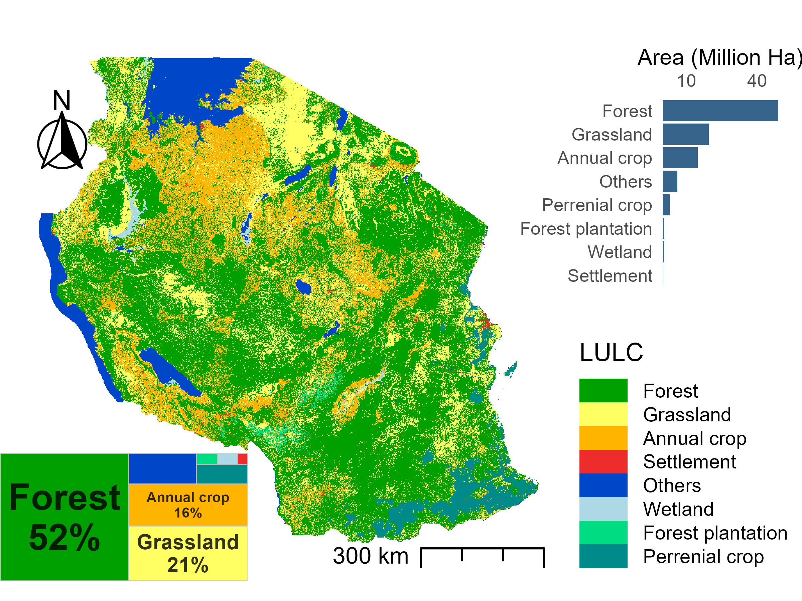
The missing years for the land cover required interpolation or extrapolation to complete the series. The values for the land use transition matrix were initially formulated by the Expert Review Team during the in-country assessment of the GHG Inventory to establish a more comprehensive time series of area data for each reported land use change category, while also resolving issues related to inconsistencies in area measurements. Furthermore, this was executed to demonstrate the dependability and precision of the matrix, along with alterations in the aggregated 26-year areas. The areas were used to formulate a two-phase computation for the yearly areas remaining in the same category and for the annual change. This was conducted to confirm that the conversions and total area remained stable across the whole period. The total loss and gain of each land use categories over the study period is presented Table 5.5 and the annual rate of change in Table 5.6.
The land conversion from major categories to sub-categories of land use and land cover classes for mainland Tanzania is shown in Figure 5.5. For instance, loss of annual crop over the inventory period is attributed by gain of forestland, grassland and settlement. The loss of forestland is contributed by gain in annual crops and grassland. The large gain of forest land, annual crop and grassland has reduced the size of forest plantations over the same period. It was also observed that the areas for settlement has shrunk in 2021 compared to 1995 due to gain in grassland, forestland and agriculture land for annual crop cultivation. However, it should be noted that the loss of settlement in the settlement category is small compared to the gain of forest in other land use classes such as annual crop, forest, forest plantation, and grassland, where settlement gains are significant high.
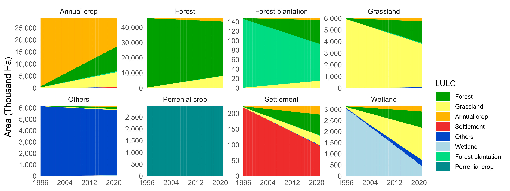
The alluvial plot in Figure 5.5 illustrates the transitions of land cover types across three distinct epochs: 1995-2010, 2010-2016, and 2016-2021. Each colored flow (or “stream”) represents a transition of land cover classes over time (Figure 5.5). Widening flows of grassland and shrinking of wetland and annual crop from 2010 toward 2021 are evident (Figure 25), illustrating shifts due to agricultural expansion and settlement.
| major |
Area (Ha)
|
||||||||
|---|---|---|---|---|---|---|---|---|---|
| Annual crop | Forest | Forest plantation | Grassland | Others | Perrenial crop | Settlement | Wetland | TOTAL | |
| Annual crop | 11,847,006.0 | 10,244,249.4 | 405,168.9 | 6,260,048.4 | 48,062.0 | 430.7 | 201,904.6 | 74,455.6 | 29,081,325.6 |
| Forest | 2,333,244.1 | 35,666,302.0 | 144,887.6 | 7,855,755.6 | 61,166.2 | 2,061.4 | 22,494.8 | 53,369.8 | 46,139,281.5 |
| Forest plantation | 4,373.5 | 49,995.0 | 77,815.3 | 14,602.8 | 171.4 | 2.6 | 369.4 | 242.8 | 147,572.8 |
| Grassland | 291,250.3 | 1,859,760.7 | 59,634.8 | 3,756,038.0 | 40,211.2 | 107.8 | 4,485.6 | 13,820.7 | 6,025,309.1 |
| Others | 58,773.4 | 195,274.9 | 831.3 | 109,805.0 | 5,724,778.2 | 65.7 | 2,693.1 | 67,796.1 | 6,160,017.7 |
| Perrenial crop | 135.2 | 1,774.9 | 3,334.9 | 861.0 | 9.2 | 2,958,212.2 | 33.6 | 9.4 | 2,964,370.4 |
| Settlement | 27,090.3 | 66,505.9 | 776.4 | 30,464.6 | 1,360.3 | 122.0 | 97,090.3 | 141.1 | 223,550.9 |
| Wetland | 245,719.4 | 729,580.9 | 626.0 | 1,462,908.3 | 265,131.2 | 45.8 | 1,269.4 | 445,426.7 | 3,150,707.7 |
| TOTAL | 14,807,592.2 | 48,813,443.7 | 693,075.2 | 19,490,483.7 | 6,140,889.7 | 2,961,048.2 | 330,340.8 | 655,262.2 | 93,892,135.7 |
| major |
Area (Ha)
|
Wetland | ||||||
|---|---|---|---|---|---|---|---|---|
| Annual crop | Forest | Forest plantation | Grassland | Others | Perrenial crop | Settlement | ||
| Annual crop | 455,654.1 | 394,009.6 | 15,583.4 | 240,771.1 | 1,848.5 | 16.6 | 7,765.6 | 2,863.7 |
| Forest | 89,740.2 | 1,371,780.8 | 5,572.6 | 302,144.4 | 2,352.5 | 79.3 | 865.2 | 2,052.7 |
| Forest plantation | 168.2 | 1,922.9 | 2,992.9 | 561.6 | 6.6 | 0.1 | 14.2 | 9.3 |
| Grassland | 11,201.9 | 71,529.3 | 2,293.6 | 144,463.0 | 1,546.6 | 4.1 | 172.5 | 531.6 |
| Others | 2,260.5 | 7,510.6 | 32.0 | 4,223.3 | 220,183.8 | 2.5 | 103.6 | 2,607.5 |
| Perrenial crop | 5.2 | 68.3 | 128.3 | 33.1 | 0.4 | 113,777.4 | 1.3 | 0.4 |
| Settlement | 1,041.9 | 2,557.9 | 29.9 | 1,171.7 | 52.3 | 4.7 | 3,734.2 | 5.4 |
| Wetland | 9,450.7 | 28,060.8 | 24.1 | 56,265.7 | 10,197.4 | 1.8 | 48.8 | 17,131.8 |
5.3.7.2 Zanzibar
Unlike the Tanzania mainland, the land use and land cover of Zanzibar is divided into five main categories including forestland, grassland, annual cropland, settlement, and others (Figure 5.6). The remaining classes including perennial crops, forest plantations, and wetland were missing because of the nature of the island. Based on the 2021 layers, forestland was the dominant land use category consisting of over 70 percent of the total area of Unguja and Pemba Island. Forestland was followed by grassland, which account for more than 19 percent of the total land area. Therefore, forestland and grassland combined account for more than 90% of the total area in Zanzibar, while the remaining class share only less than 9 percent.
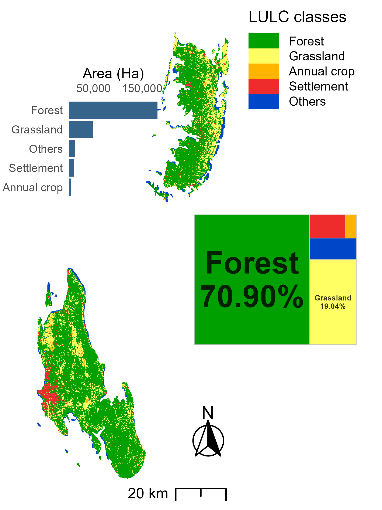
Despite lack of the same categories, it was found that the land use categories experienced significant changes over the inventory period contributed by socio-economic development and environmental factors. The rapid increase of human population the Zanzibar has demanded more areas for settlements and agriculture, leading to loss forest in the Pemba and Unguja Islands. Similar to Figure 5.6, the land conversion from major categories to sub-categories of land use and land cover classes for Zanzibar is shown in Figure 5.7. It was found that the loss of annual crop over the inventory period was mainly contributed by gain of forestland, grassland and settlement. The loss of forestland is contributed by gain in annual crops and grassland. The large gain of forest land, annual crop and grassland has reduced the size of forest plantations over the same period. It was also observed that the areas for settlement have shrunk in 2021 compared to 1995 due to gain in grassland, forestland and agriculture land for annual crop cultivation. However, it should be noted that the loss of settlement in the settlement category is small compared to the gain of forest in other land use classes such as annual crop, forest, forest plantation, perennial crop, and grassland, where settlement gains are significant high.
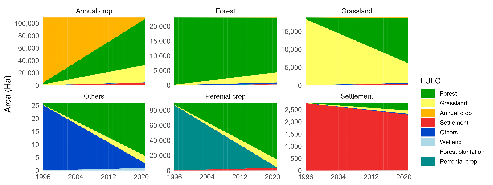
| 1995/2021 |
Area (Ha)
|
|||||||
|---|---|---|---|---|---|---|---|---|
| Annual crop | Forest | Forest plantation | Grassland | Others | Perrenial crop | Settlement | Total | |
| Annual crop | 2,249.1 | 74,373.3 | 61.4 | 28,367.8 | 613.2 | 130.3 | 3,742.1 | 109,537.2 |
| Forest | 30.0 | 18,605.2 | - | 3,427.3 | 818.7 | 42.4 | 70.3 | 22,993.9 |
| Grassland | 85.7 | 12,621.3 | - | 5,532.7 | 227.2 | - | 402.7 | 18,869.6 |
| Others | - | 20.5 | - | 2.9 | 2.7 | - | - | 26.1 |
| Perenial crop | 772.7 | 74,007.0 | 2.4 | 10,679.9 | 377.7 | 326.3 | 3,715.5 | 89,881.5 |
| Settlement | 4.5 | 314.2 | - | 135.4 | 37.1 | - | 2,293.4 | 2,784.6 |
| total | 3,142.0 | 179,941.5 | 63.8 | 48,146.0 | 2,076.6 | 499.0 | 10,224.0 | 244,092.9 |
| 1995/2021 |
Area (Ha)
|
||||||
|---|---|---|---|---|---|---|---|
| Annual crop | Forest | Forest plantation | Grassland | Others | Perrenial crop | Settlement | |
| Annual crop | - | 2,860.5 | 2.4 | 1,091.1 | 11.8 | 5.0 | 143.9 |
| Forest | 1.2 | - | - | 131.8 | 15.8 | 1.6 | 2.7 |
| Grassland | 3.3 | 485.4 | - | - | 4.4 | - | 15.5 |
| Others | 0.0 | 0.8 | - | 0.1 | - | - | - |
| Perenial crop | 29.7 | 2,846.4 | 0.1 | 410.8 | 7.2 | - | 142.9 |
| Settlement | 0.2 | 12.1 | - | 5.2 | 0.7 | - | - |
5.3.8 Forest land (3B1)
Tanzania’s forests between 1995 and 2021, forestland remained a net carbon sink (Figure 5.8), though have contributed to land-use conversions. On average, forestland remaining forestland (FL-FL) accounted for 2,986,583 ha of carbon sinks annually. Land converted to forestland also has played an important role, with cropland-to-forestland conversions contributing 122,195 ha and grassland-to-forestland conversions adding 202,173 ha annually. Conversions from settlements and other lands to forestland covered 7,996 ha and 59,046 ha, respectively.
Over the 26-year period from (1996 to 2021), reforestation efforts significantly expanded forest cover: cropland-to-forestland increased by 2.59 million ha, and grassland-to-forest land grew by 2.42 million ha. These gains reflect the impacts of government policies such as the ban on raw timber exports, large-scale reforestation programs, and increased private sector participation. Moreover, the implementation of initiatives like the AFR100 (African Forest Landscape Restoration) has further boost efforts to restore degraded lands and increase carbon removals; these solidify Tanzania’s forests as a critical carbon sink for climate change mitigation.
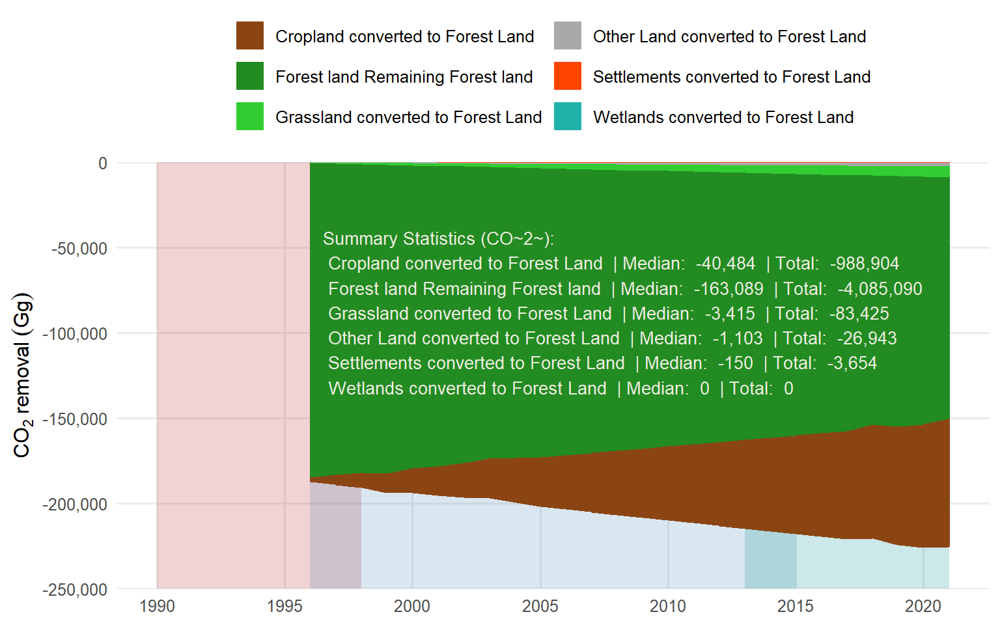
5.3.9 Cropland (3B2)
Between 1995 and 2021, the trend of land conversion to cropland in the United Republic of Tanzania exhibits diverse contributions from various land types (Figure xx). In 1996, the conversion of forest land to agriculture accounted for 0.92%, grassland conversion for 0.04%, settlement conversion for 0.01%, and other land had a negative contribution of -0.03%. In 1997, forest land accounted for 1.93%, grassland for 0.34%, settlements for 0.02%, and other land for -0.07%. By 1998, forest land constituted 3.05%, grassland stayed at 0.54%, settlements at 0.03%, and other land decreased by 0.12%.
Over time, forest land remained the principal factor in farmland growth, achieving 287.75% by 2016 and 312.67% by 2021. Conversely, grassland conversion contributed markedly less, with 51.14% in 2016 and 55.56% in 2021. Settlements consistently represented a minor proportion, with values of 3.29% in 2016 and 3.57% in 2021. Other land also exhibited negative contributions, with a decline in farmland of -10.95% in 2016 and -11.88% in 2021.
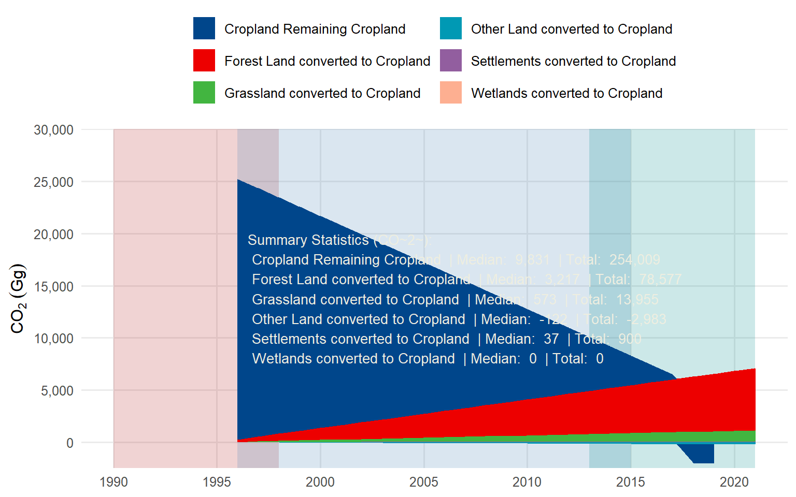
5.3.10 Grassland (3B3)
From 1995 to 2021, Tanzania has experienced a significant trend of grassland being converted into other land uses (Figure 5.10). This transformation became noticeable starting in 1996, with a steady decline in the remaining grassland area as it was increasingly converted to various other land types. The conversion of forest land to grassland showed a consistent upward trend, starting at -1,529.88 hectares in 1996 and increasing to -39,834.98 hectares by 2021, indicating a gradual decline in forest cover in favor of grassland expansion.
Similarly, cropland converted to grassland followed an increasing pattern, beginning with -1,835.87 hectares in 1996 and reaching -47,732.68 hectares by 2021, this shows the growing conversion of agricultural land to grassland. The conversion of settlements to grassland also rose steadily, from -5.93 hectares in 1996 to -154.19 hectares in 2021, although this category contributed less to the overall conversion compared to forest and cropland. Additionally, other land uses were converted to grassland, increasing from -31.71 hectares in 1996 to -824.36 hectares in 2021.
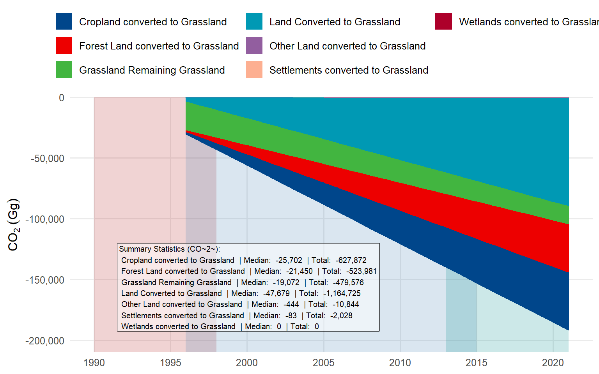
5.3.11 Wetland (3B4)
Tanzania does not report any emissions under wetland. Wetlands are highly variable ecosystems, with fluctuating water levels, seasonal changes, and diverse vegetation types. These factors contribute to significant spatial and temporal variability in greenhouse gas emissions, CO2 from conversion to wetlands by flooding, leading to methane (CH4) attributed by the complex interactions between hydrology, vegetation, and microbial processes. Moreover, human activities such as land use changes, drainage, and water management practices significantly affect wetland areas and their emissions.
5.3.12 Settlements (3B5)
Between 1995 and 2021, land-use changes from other land use to settlements in the United Republic of Tanzania has shown that conversions of forest land, cropland, and grassland into settlements has increased (Figure 5.11). Over the 25-year period, a total of 384.14 ha of forestland were converted to settlements, with an annual average conversion rate of 15.37 ha/year. Cropland experienced the highest level of conversion, contributing 897.89 ha to settlements at an average rate of 35.92 ha/year, making it the largest contributor to settlement expansion—approximately 2.34 times more than forestland. Grassland conversions were minimal, with only 4.70 ha converted in total, averaging 0.19 ha/year over the same period. Contrary, other land categories showed a total change of -16.59 ha, which may reflect adjustments in land classifications or methodological factors.
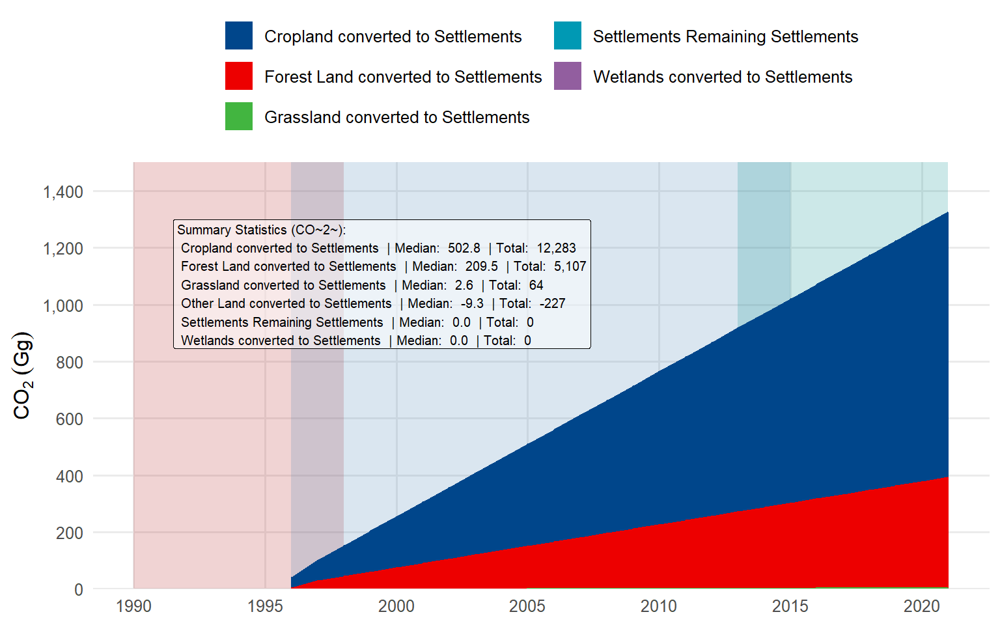
5.3.13 Other land (3B6)
Other Land includes areas such as barren land; rock-outcrops, which have limited vegetation and organic matter, leading to relatively, lower emissions. Therefore, starting at 47.86 units in 1996 and steadily increasing to 393.58 units by 2021, indicating ongoing deforestation pressure. Cropland conversion follows a similar pattern but at a lower magnitude, rising from 50.59 units to 185.28 units (Figure 5.12).
Grassland conversion presents a unique pattern with initially high emissions of 431.10 units in 1996, stabilizing at 477.69 units from 2000 to 2015, before dropping sharply to 243.83 units in 2016 and gradually increasing to 301.89 units by 2021 (Figure 5.12). This suggests significant policy changes or land use modifications in 2016. Settlements conversion shows the lowest overall emissions, starting at 3.79 units in 1996, peaking at 19.05 units in 2001, maintaining stability at 15.88 units for several years, then decreasing to 7.05 units in 2016 before slight increases to 8.73 units by 2021 (Figure 5.12).
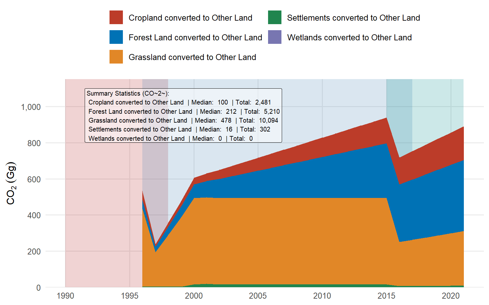
5.4 Emissions and removals from Aggregated and non-CO2 emissions on land (3C)
5.4.1 Category overview
The CO2 equ emission from Aggregated and non-CO2 emissions on land (3C) fall under three categories – Burning in Forest Land, Burning in Cropland, and Burning in Grassland (Table 5.9). These categories emitted ammonia (CH4) and nitrogen dioxide (N2O). In 2021, the equivalent CO2 emitted from burning in forest land was 322.3 Gg which has increased by 6.2% compared to 303.5 in 2002. The equivalent CO2 emitted from burning in cropland was 1.7 Gg in 2021, which has declined by 70.8% compared to 5.8 Gg in 2002. Similarly, the equivalent CO2 emitted from burning of grassland decreased from 1,433.8 Gg in 2002 to 794.1 Gg in 2021, a decrease of about 44.6 percent (Table 5.9)
| Non-CO2 emissions category |
CO2eq (Gg)
|
Change (%) | |
|---|---|---|---|
| 2002 | 2021 | ||
| 3.C.1.a - Burning in Forest Land | 303.55 | 322.28 | 6.17 |
| 3.C.1.b - Burning in Cropland | 5.84 | 1.71 | −70.82 |
| 3.C.1.c - Burning in Grassland | 1,433.84 | 794.08 | −44.62 |
5.4.2 Biomass burning (3C1)
5.4.2.1 Burning in Forest land
This category involves the combustion of trees and other vegetation in forest areas. It includes emissions from activities like deforestation, forest degradation, and wildfires. The primary gases released are CO2, CH4, and N2O (Figure 5.13). This category is significant because it often leads to large-scale carbon emissions due to the high biomass density in forests.
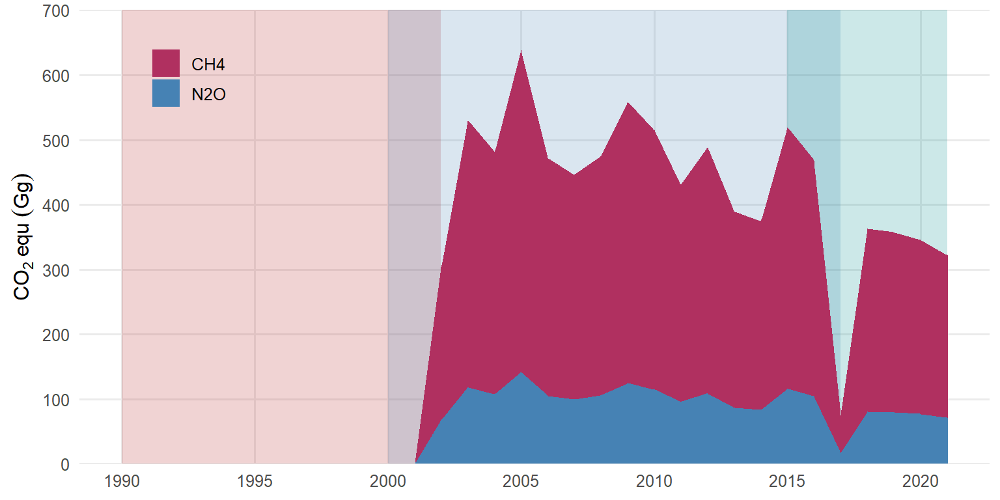
5.4.2.2 Burning in cropland
Burning in cropland refers to the combustion of agricultural residues left on fields after harvest. Farmers often burn crop residues to clear fields for the next planting season. This practice releases CO2, CH4, and N2O (Figure 5.14). While emissions from this category are typically lower than those from forest burning, they still contribute to the overall GHG inventory.
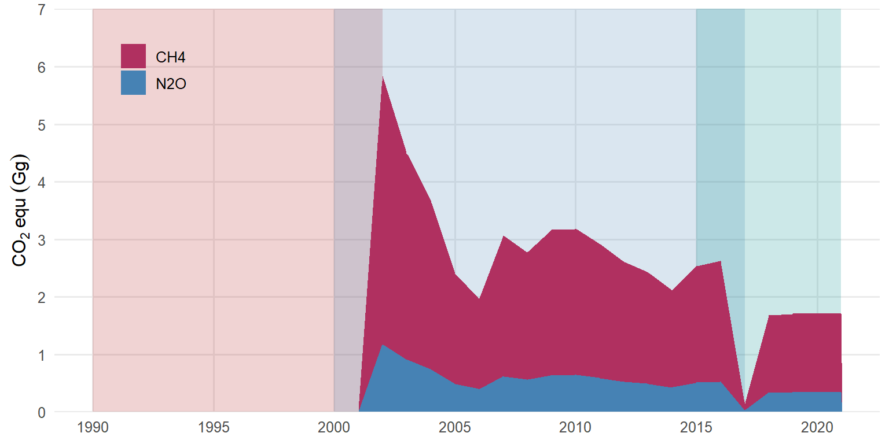
5.4.2.3 Burning in Grassland
This category includes the burning of grasses and shrubs in grassland areas, which is common in savanna regions. It is often used as a land management practice to promote new growth or reduce the risk of uncontrolled wildfires. Emissions from grassland burning primarily include CO2, CH4, and N2O (Figure 5.15). This category can exhibit significant fluctuations in emissions depending on land management practices and climatic conditions.
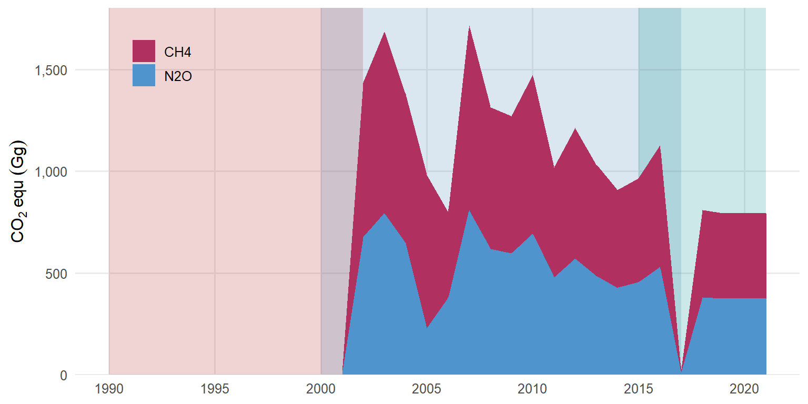
5.4.3 Lime application (3C2)
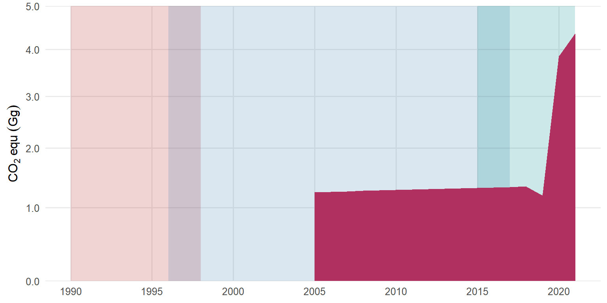
5.4.4 Urea application (3C3)
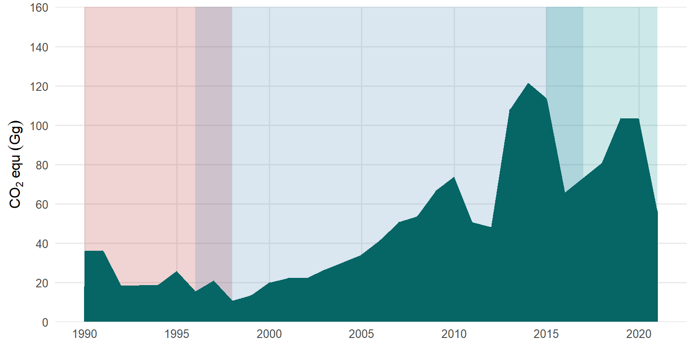
5.4.5 Direct N2O emissions from managed soils (3C4)
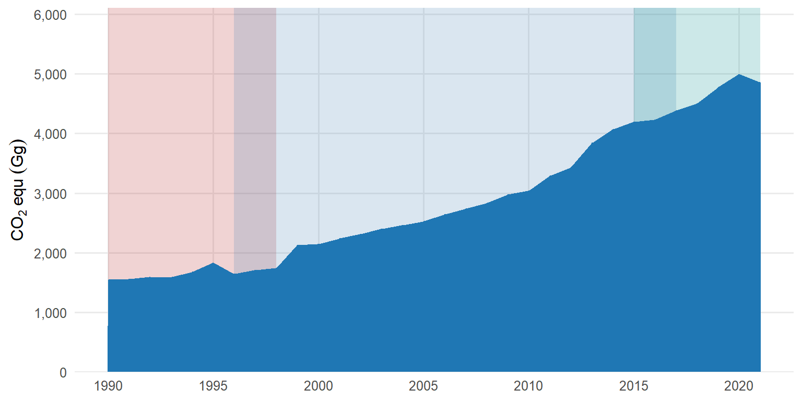
5.4.6 Indirect N2O from manure management (3C6)
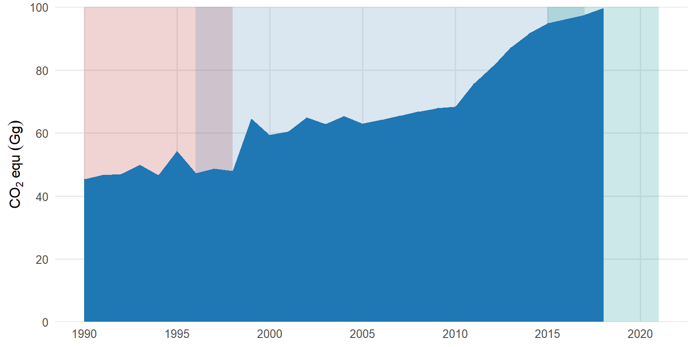
5.4.7 Rice Production (3C7)
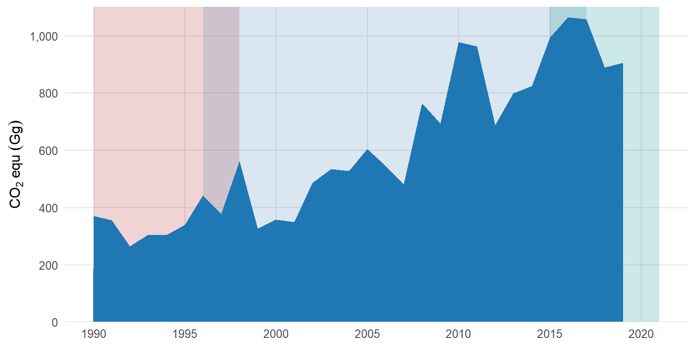
5.5 Emissions and removals from Harvested wood products (3D1)
5.5.1 Category Description
| HWP category |
CO2equ (Gg)
|
Change (%) | |
|---|---|---|---|
| 2000 | 2021 | ||
| 3.D.1 - Harvested Wood Products | -10.28112 | -161.2791 | 1468.693 |
5.5.2 Emissions and removals from HWP
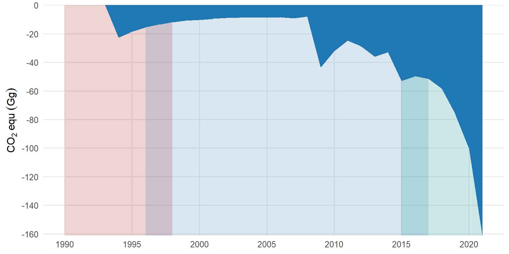